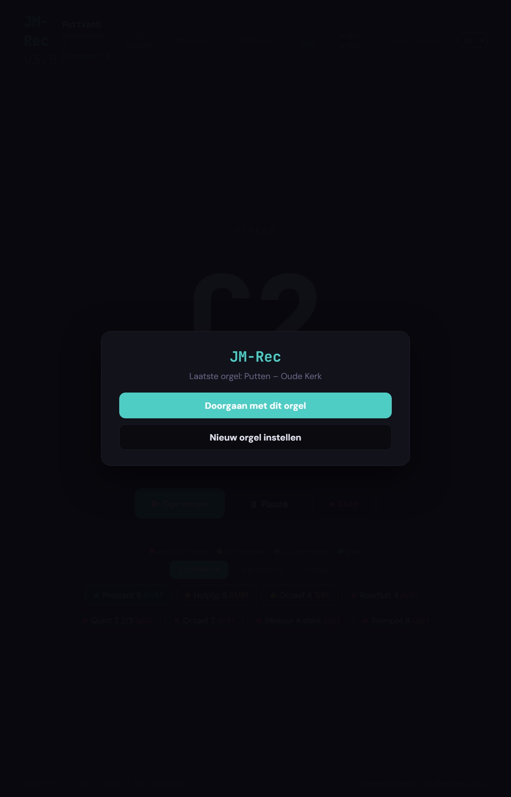

Een echte wizard
Tien stappen van opslagmap tot klavieren en registers. JM-Rec stelt elke vraag in de goede volgorde en onthoudt de keuzes per orgel, zodat volgende sessies in één klik verder gaan.
Pijporgels samplen, zonder kabelgedoe.
JM-Rec neemt pijp voor pijp op, loopt automatisch door klavieren en registers heen en schrijft het resultaat weg in het mapformaat dat JM-Orgue direct leest. Bediening vanaf elke telefoon of tablet in het netwerk, zonder app te installeren.

Tien stappen van opslagmap tot klavieren en registers. JM-Rec stelt elke vraag in de goede volgorde en onthoudt de keuzes per orgel, zodat volgende sessies in één klik verder gaan.
Een voortgangsstrook laat per register zien wat er al staat (groen) en wat er mist (rood/geel). Niet-opgenomen pijpen springen vanzelf eerst naar voren. Niets wordt overgeslagen.
De computer staat op het koor, u zit op de orgelbank. JM-Rec toont een QR-code; u scant hem met uw telefoon en bedient Opnemen, Pauze en Stop uit de bank, zonder iets te installeren.
De opnamen worden weggeschreven in de map-per-register-structuur die JM-Orgue direct herkent. Geen omzetten, geen hernoemen: na afloop in JM-Orgue op Open organ… en de set staat erin.
Na elk register loopt JM-Rec de opnamen na, meldt stilte, clipping en te korte uitklank, en stelt loop-punten voor zodat lange tonen vloeiend herhalen.
Opnemen via een microfoon in de kerk of via de WASAPI-loopback van een al draaiend virtueel orgel. Hetzelfde proces, dezelfde map-structuur, hetzelfde eindresultaat.
De officiële releases staan op GitHub en zijn gratis te gebruiken.
De release-build is voor Windows (installer + portable zip). Linux en macOS zijn experimenteel; zie het repository voor details.
Een stap-voor-stap handleiding met echte schermafbeeldingen uit JM-Rec:
Meer talen volgen. De README in de app en op GitHub is al zeventaltalig beschikbaar.
Wat u met JM-Rec opneemt, speelt u direct af in JM-Orgue: een gratis, open virtueel pijporgel voor Windows, macOS en Linux, met registers, koppels, zwelkasten, tremulant, galm en een generaal crescendo.
Een Windows-laptop, een MIDI-klavier (of de orgelspeeltafel zelf), en een opnamebron: een USB-microfoon in de kerk, of een virtueel orgel waarvan u via “Wat je hoort” (WASAPI-loopback) de uitgang opneemt. Een telefoon of tablet is handig als afstandsbediening maar niet verplicht.
Dat hangt af van het orgel. Een klein pedaal-huisorgel kan in een uur. Een groot kerkorgel met tien registers per klavier kost een dagdeel of een hele dag: elke toon van elk register komt een eigen opname, met voldoende uitklanktijd voor de galm.
Ja. Onderaan het hoofdscherm staan alle registers per klavier met de voortgang (bijvoorbeeld “Prestant 8 — 31 van 61”). Een kleurenlegenda laat zien wat af is, wat nog gecontroleerd moet, en wat er nog op te nemen is.
Opent u in JM-Orgue de bibliotheek, klikt u op Open organ… en kiest u de opslagmap die u in JM-Rec hebt opgegeven. JM-Orgue leest de map-per-register-structuur rechtstreeks en toont alle werken, registers en koppels.
De officiële release-versies mogen vrij worden gebruikt en doorgegeven. De broncode staat onder “alle rechten voorbehouden” en mag niet zonder toestemming worden hergebruikt. Uw eigen opnamen en samplesets zijn uiteraard van u.